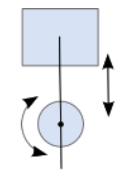

Restricts a point on the second body to a line on the first body.

Constructors
| love.physics.newWheelJoint | Creates a wheel joint. |
Functions
| Joint:destroy | Explicitly destroys the Joint. | ||
| Joint:getAnchors | Get the anchor points of the joint. | ||
| Joint:getBodies | Gets the bodies that the Joint is attached to. | ||
| Joint:getCollideConnected | Gets whether the connected Bodies collide. | ||
| Joint:getReactionForce | Returns the reaction force on the second body. | ||
| Joint:getReactionTorque | Returns the reaction torque on the second body. | ||
| Joint:getType | Gets a string representing the type. | ||
| Joint:getUserData | Returns the Lua value associated with this Joint. | ||
| Joint:isDestroyed | Gets whether the Joint is destroyed. | ||
| Joint:setCollideConnected | Sets whether the connected Bodies should collide with each other. | ||
| Joint:setUserData | Associates a Lua value with the Joint. | ||
| WheelJoint:enableMotor | Starts and stops the joint motor. | ||
| WheelJoint:getAxis | Gets the world-space axis vector of the Prismatic Joint. | ||
| WheelJoint:getJointSpeed | Returns the current joint translation speed. | ||
| WheelJoint:getJointTranslation | Returns the current joint translation. | ||
| WheelJoint:getMaxMotorTorque | Returns the maximum motor torque. | ||
| WheelJoint:getMotorSpeed | Returns the speed of the motor. | ||
| WheelJoint:getMotorTorque | Returns the current torque on the motor. | ||
| WheelJoint:getSpringDampingRatio | Returns the damping ratio. | ||
| WheelJoint:getSpringFrequency | Returns the spring frequency. | ||
| WheelJoint:isMotorEnabled | Checks if the joint motor is running. | ||
| WheelJoint:setMaxMotorTorque | Sets a new maximum motor torque. | ||
| WheelJoint:setMotorEnabled | Starts and stops the joint motor. | ||
| WheelJoint:setMotorSpeed | Sets a new speed for the motor. | ||
| WheelJoint:setSpringDampingRatio | Sets a new damping ratio. | ||
| WheelJoint:setSpringFrequency | Sets a new spring frequency. |
Supertypes
See Also